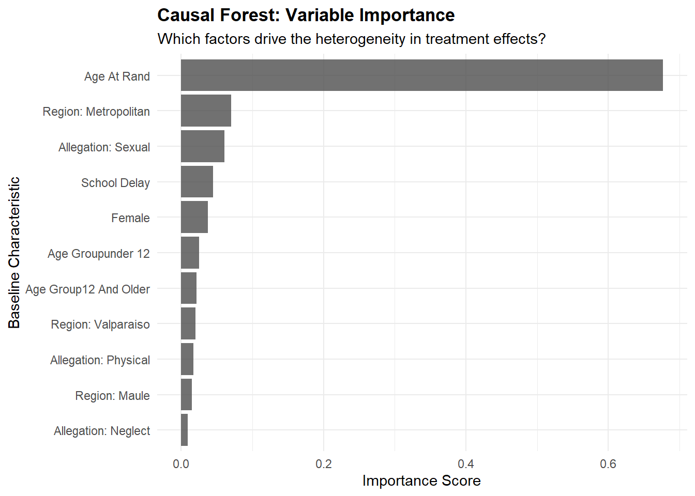
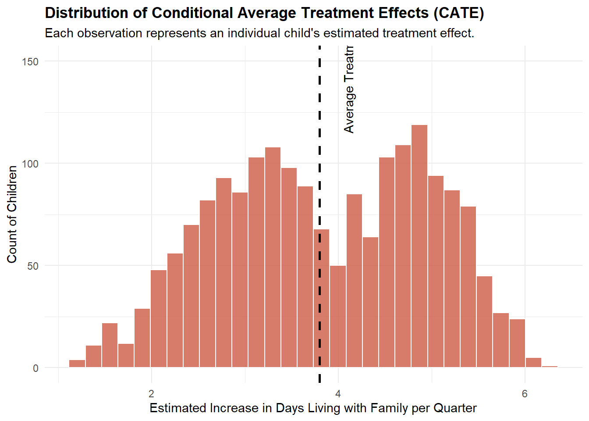

Causal ML Extension: Heterogeneous Treatment Effects
Overview
The baseline difference-in-differences model identified an average treatment effect (ATE) of roughly 5.6 additional days living with family per quarter for children in the Mi Abogado program. However, child welfare interventions rarely impact all cases equally. The authors explore this heterogeneity by splitting the sample into subgroups.
In this extension, we apply a machine learning approach to estimate the Conditional Average Treatment Effect (CATE). Specifically, we use a Causal Forest to understand not just if the program works on average, but for whom it works best.
\[ \tau(x) = E[Y_i(1) - Y_i(0) | X_i = x] \]
1. Environment Setup & Data Prep
Code
library(tidyverse)library(grf) library(ggplot2)# Load the synthetic panel datapanel_data <-read_rds("data/synthetic_mi_abogado_panel.rds")# To use grf, we need cross-sectional data. We will aggregate the outcome # (average days with family) for each child in the post-randomization period.cross_section <- panel_data %>%filter(post ==1) %>%group_by(child_id, treated, female, age_at_rand, age_group, region, school_delay, allegation_neglect, allegation_physical, allegation_sexual) %>%summarize(avg_days_post =mean(days_with_family), .groups ='drop')
2. Training the Causal Forest
The grf package requires our covariates (\(X\)) to be a numeric matrix. We will convert our categorical variables (like region) into dummy variables, separate our treatment indicator (\(W\)), and isolate our outcome (\(Y\)).
Code
# 1. Covariate Matrix (X)# We use model.matrix to handle dummy encoding for the region and age_group factorsX_df <- cross_section %>%select(-child_id, -treated, -avg_days_post)X <-model.matrix(~ . -1, data = X_df)# 2. Treatment Vector (W)W <- cross_section$treated# 3. Outcome Vector (Y)Y <- cross_section$avg_days_post# Train the Causal Forest# We set a seed within the function for reproducibilityc_forest <-causal_forest(X = X,Y = Y,W = W,num.trees =2000,seed =0331)# Print out the Average Treatment Effect estimated by the forestate_cf <-average_treatment_effect(c_forest, target.sample ="all")paste("Causal Forest ATE:", round(ate_cf["estimate"], 2), "days (SE:", round(ate_cf["std.err"], 2), ")")
[1] "Causal Forest ATE: 3.8 days (SE: 0.27 )"
3. Variable Importance
Which baseline characteristics are most responsible for driving the heterogeneity in treatment effects? We can extract the variable importance scores from the causal forest to find out.
Code
# Extract variable importancevar_imp <-variable_importance(c_forest)var_names <-colnames(X)# Create a clean dataframe for plottingimportance_df <-tibble(Variable = var_names,Importance =as.numeric(var_imp)) %>%arrange(desc(Importance)) %>%# Clean up variable names for the plotmutate(Variable =str_replace_all(Variable, "allegation_", "Allegation: "),Variable =str_replace_all(Variable, "region", "Region: "),Variable =str_to_title(str_replace_all(Variable, "_", " ")))# Plot the importanceggplot(importance_df, aes(x =reorder(Variable, Importance), y = Importance)) +geom_col(fill ="gray30", alpha =0.8) +coord_flip() +labs(title ="Causal Forest: Variable Importance",subtitle ="Which factors drive the heterogeneity in treatment effects?",x ="Baseline Characteristic",y ="Importance Score" ) +theme_minimal() +theme(plot.title =element_text(face ="bold"))

Interpretation: The plot above reveals which baseline characteristics the Causal Forest splits on most frequently to maximize differences in treatment effects. Age at Randomization overwhelmingly dominates the model, indicating it is the single most critical factor in predicting a child’s response to the enhanced legal aid. To a much lesser but still notable extent, whether the child resides in the Metropolitan region and whether their case involves a Sexual abuse allegation also serve as key drivers in differentiating highly successful interventions from average ones.
4. The Distribution of Treatment Effects
Finally, we predict the specific CATE for every child in our dataset and plot the distribution. This highlights the spread of the program’s effectiveness across the population.
Code
# Predict the CATE for each child (out-of-bag estimates)cate_predictions <-predict(c_forest)$predictionscross_section$CATE <- cate_predictions# Plot the distribution of the CATEsggplot(cross_section, aes(x = CATE)) +geom_histogram(fill ="coral3", color ="white", bins =30, alpha =0.8) +geom_vline(xintercept = ate_cf["estimate"], linetype ="dashed", color ="black", linewidth =1) +annotate("text", x = ate_cf["estimate"] +0.2, y =150, label ="Average Treatment Effect", angle =90, vjust =1.5) +labs(title ="Distribution of Conditional Average Treatment Effects (CATE)",subtitle ="Each observation represents an individual child's estimated treatment effect.",x ="Estimated Increase in Days Living with Family per Quarter",y ="Count of Children" ) +theme_minimal() +theme(plot.title =element_text(face ="bold"))

Conclusion: While the baseline model found an average benefit of 3.74 days, this CATE distribution reveals a striking bimodal (two-peaked) spread. The estimated individual treatment effects range from roughly 1 to over 6 additional days with family per quarter, with distinct clusters forming around the 3-day and 5-day marks. This proves that the program’s benefits are highly non-uniform. By cross-referencing this distribution with our variable importance metrics, welfare agencies can mathematically identify the specific demographic profiles driving that high-impact 5-day peak, enabling data-driven targeting of constrained legal resources.